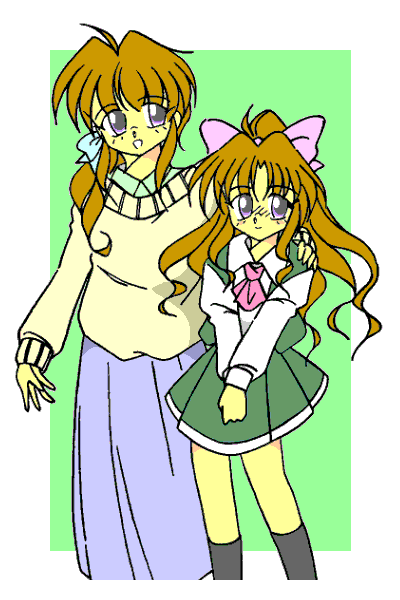

その日、終日晴天という予報は外れ、一面の厚い雲からポツリポツリと雨が落ちてきた。
授業が終わりアパートへ帰ろうとした俺は、近道である学校裏の雑木林の中で雨に降られ、そばにある木の下で雨宿りを余儀なくされた。
｢くそっ、まったく最近の天気予報ときたら外れてばかりだな。気象庁も民営化したほうがいいんじゃないか？｣
俺は毒づきながら空を見上げた。
学校の敷地内にあるこの林からアパートまではまだ少し距離がある。雨が止むまではここにいた方が賢明である。ただし……
ピカッ、ゴロゴロゴロ―――
｢やばいっ！！｣
雲間からの稲光と雷鳴に俺は慌てた。
雷は高い所に落ちやすい。木は絶縁体だから大丈夫――というのは間違いで、落雷の際、２ｍ以内にいたら巻き添えをくう可能性すらある。
ここは多少濡れてもその場を離れるべき、と判断したそのとき……
バババババッ！！！
目の前で閃光が走り、大音響が轟いた。
｢うわっ！！｣
俺は思わず目を瞑り、耳を塞いだ。
そして目を開けたとき、俺は閃光のあった場所で誰かが倒れているのに気がついた。
｢おい、大丈夫か？｣
駆け寄って抱き起こすと、そいつは少しうめきながら目を開けた。怪我や火傷などがない事に俺はほっとした。
空から大粒の雨が落ちてきて俺とそいつを濡らし始めた。
｢走るぞ｣
｢えっ？｣
｢馬鹿野郎、このまま濡れたら風邪をひくだろう！？ 俺のアパートまで少し距離があるから急いで行くぞ。さあ来い｣
きょとんとしているそいつの手を引きながら、俺は走り出した。
彼方より
作：ライターマン
猪上彰人（いのうえ・あきと）。私立大学に通うごく普通の学生――それが俺だ。
｢くっそー、結局ずぶぬれになっちまった｣
急いではいたのだが、アパートにたどり着く頃には下着までびっしょりと濡れてしまっていた。
｢すぐに着替えないと。お前も早く脱げ、着替えは俺のを貸してやる｣
俺は連れてきたそいつにそう言いながら、２人分の着替えを引っ張り出した。
そいつは一見すると１２、３歳くらいの男の子だった。小柄で短髪の元気そうな子だが、そんな子がスーツを着て白衣を羽織っているのがちょっと気にはなった。
そういえばこいつどうしてあんな所にいたんだろう？ １人で遊んでた……ような感じではないんだが。
｢いいよ、別にそんなことをしてもらわなくても……｣
｢いいから早くしろ！！ 身体が冷えて風邪をひいてしまうぞ｣
俺が怒鳴り気味にそう言うと、そいつは着ている物を脱ぎ始めた。
そいつは服を脱ぎながらクスリと笑い、俺に言った。
「なんか母さんみたいな人だな。お前って」
｢はあ？｣
｢前にも急に雨に降られてずぶ濡れになった時、母さんがやっぱり『いいから早くしろ！！ 身体が冷えて風邪をひいてしまうぞ』って言って、強引に服を脱がせて風呂場に放り込まれたんだ｣
｢そりゃあすごいお袋さんだな｣
｢うん。ところでお前はどうして僕にここまで親切にするんだ？｣
｢ええっと……それは……｣
そいつの質問に俺は首を傾げた。そういえば俺って、見ず知らずの人間にここまで世話を焼く人間だっただろうか？ ただ……
｢なんとなく……放っておけなかったんだよ｣
｢ふうん。あ、脱いだ服はどこに置いとこうか？｣
｢風呂場の横にある袋に入れといてくれ。すぐコインランドリーで……｣
言いながらそいつの方を向いた俺は、そこで驚きに言葉を失ってしまった。
目の前には全裸になったそいつがいた。全裸だけならまだしもそいつの身体は……
｢お前……女の子だったのかっ！？｣
その言葉にそいつはきょとんとした表情になった。
｢はあ？ 何言ってんだよ。僕が女のわけ……｣
そう言ってそいつは自分の胸を叩いたのだが……
ポヨン
という効果音が聞こえてきそうな感じで、そいつの胸が揺れた。
｢あれ？｣
そいつの胸には成長過程のためか小さい、しかしはっきりと判る２つの膨らみがあった。
それだけじゃない。その下の股間は……
｢あれえっ！！ なっ、なんだこれはっ！？｣
自分の股間を見つめる体勢でそいつは絶叫した。
｢ほら、飲めよ｣
俺は温めた牛乳をマグカップに入れて、そいつに差し出した。
呆然とした表情のままでマグカップを受け取りながら、そいつは｢どうして……｣と呟いた。
裸のままでいさせる訳にはいかなかったので無理やり服を着せたのだが、そいつはさっきからずっとこんな調子だった。
｢そういえば名前を聞いてなかったな。俺は彰人、お前……君は？｣
｢……翼（つばさ）｣
｢へえ、可愛い名前だね。男みたいな格好だったから俺はてっきり……｣
｢僕は男だ！！｣
そいつ＝翼の言葉に俺は驚いた。
｢え？ しかしさっきのあれは……｣
｢それは……でも実験前までは確かに男だったんだ｣
｢実験？｣
｢『特定条件下の電界と磁界の影響による時間の揺らぎに関する考察』の検証実験さ。僕が書いた論文が公表された時、ちょっとした話題になったんだけど憶えてない？｣
｢いいや｣
俺は翼の言葉に首を横に振った。一応理工学部なのでニュースの他、学内の主要な研究テーマも知ってるつもりだが、そんな名前の論文など聞いた事がなかった。
｢そうか知らないんだ。まあ、その論文のおかげで僕は二瓶教授から理学実験棟の一室を特別に与えられて検証することになったんだ｣
｢ちょっと待て、二瓶って去年入ったばかりの新人講師だろ？ そいつがなんで教授なんだよ？｣
｢何言ってるんだよ。確かに教授の中では若いけど二瓶教授は在任１０年以上のベテランだぞ｣
｢はあ？｣
｢とにかく僕は与えられた研究室で理論を証明するための電磁ヴェクトロンを組み立てて、その中で発生する時間の揺らぎを測定しようとしたんだ。けど……｣
｢けど？｣
｢急に目の前が真っ白になって……気がついたら彰人に抱き起こされていたんだ｣
｢うーん、ちょっと信じられない話なんだが……だいたい翼、お前いくつなんだよ？ 大学生どころか高校生にも見えないんだが｣
｢１２だけどそれがどうかしたのか？ 確かに２年前、飛び級で大学に入った時は国内最年少記録とか言ってたらしいけど｣
｢２年前？ 飛び級？ おいおい、今の日本にそんな制度はないぞ。もしかして帰国子女？｣
さっきから翼との会話がかみ合わない。おかしい、何かが変だ。
｢ちょっと待って！？ 飛び級制度がない？ まさか……念のために聞くけど、今は何年の何月？｣
｢何言ってるんだ？ 今年は平成１８年の……｣
｢平成っ！？ じゃあやっぱり……でも１５年以上も『跳んで』しまうなんて……そんな事……ありえない｣
翼の顔がみるみるうちに青ざめていった。
｢おい翼、大丈夫か？｣
声をかけるが翼は返事をしない。心ここにあらずといった感じだった。
俺は深呼吸をすると、両手を翼の顔の前で勢いよく打ち合わせる。
パアンッ！！ と大きな音が響き、翼の身体が少し跳ねて俺の方を見た。
｢翼？｣
｢あ、ごめん。いやしかし……まいったな｣
そう言って翼は大きな溜息をついた。
｢なあ翼、訊いてもいいか？ もしかして翼は……未来から来たのか？｣
我ながらちょっと飛躍した仮定だとは思う。でもさっきから翼との会話は時間に関する部分がかみ合っていない。
そう、今の日本に飛び級制度は存在しない。しかし将来、たとえば十数年先の未来なら？ その頃には入ったばかりの二瓶講師も教授になってるかもしれない。
そう言えばさっき翼が口にした論文のテーマも時間に関することだった。翼が未来の日本で実施された飛び級制度で大学へ入り、そして現在へと時間移動してきたとしたら？
｢そうだ、と言ったら……彰人は信じれくれるのか？｣
俺を見る翼の目には｢どうせ信じてはくれない｣という諦めと、｢お願いだから信じて欲しい｣という想いが交互に揺らいでいるように見えた。
俺は、
｢ああ、信じるよ。翼の言うことなら｣
と言った。
説明しづらいが、俺は「翼」という人間を知っているような……気がする。こいつの言うことなら信じたいし、何よりも安心させてやりたかった。
｢ありがとう、彰人｣
翼はそう言って穏やかな表情になった。緊張が解けたのか、身体が椅子に沈み込むような感じになる。
｢で、どうする？ よければここで一緒に暮らしても……｣
と言ったところで俺は慌てた。
そうだ、こいつは女の子だった。いや、本人は男だと言っているが、何も知らない他人から見れば年端もいかない女の子との同棲に見えるんじゃないか？
しかし翼は首を横に振った。
｢いや、まずは未来に戻る方法がないか調べてみる。ところでここにコンピュータは？｣
｢あるけど……｣
そう言って俺が部屋の隅にあるパソコンを指差すと、翼は駆け寄ってパソコンを起動し、素早い動きでいろいろと操作を始めた。
しかしすぐにその手を止めて、両手を上げる。
｢駄目だ、速度不足だし調べようにも資料がない。どこかにもっと早いコンピュータはないかな？｣
｢うーん……あ、美月姉さんの研究室なら確かスパコンの端末もあるし、先月ネットを高速回線に切り替えてライブラリのアクセスが早くなったって言ってたな｣
｢美月姉さん？｣
｢ああ、俺の従兄弟で大学の研究員なんだ。ちょっと待ってくれ｣
俺は携帯電話を取り出して電話をかける。
｢もしもし、姉さん？ 彰人だけど、ちょっと調べたいことがあってスパコンとネットを使いたいんだけど。ああ、雨ならもう上がってるから大丈夫。うん、判った｣
携帯電話を切ると俺は翼に笑顔を見せた。
｢今からでもOK、だとさ｣
｢ふーん、それでこの娘が彰人が連れ込んだ彼女と言うわけか。彰人にロリコンの趣味があるとは知らなかったわ｣
｢違うよ姉さんっ！！｣
美月姉さんのからかいに俺は顔を赤くして反論する。
高千穂美月（たかちほ・みつき）。俺の従姉弟で大学の研究生。成績優秀で学校からかなり期待されている……と本人は言っている。
｢でもねえ、この子が大学生で未来から来たと言われてもねえ｣
そう言って美月姉さんはニヤニヤと笑っている。
頭から否定している訳じゃないが、全面的に信頼している訳でもなさそうだった。
翼の方を見ると、美月姉さんを見て少し驚いてるようだった。美人だし、若く見えることで女子大生に見えることもあるから見とれてるのだろうか？
｢翼？｣
｢えっ？ ああごめん。ちょっと失礼します｣
そう言った翼が前に進み出て、美月姉さんの机にあった真っ白な紙にすらすらと数式を書いていく。
｢これが何か、解かりますよね？｣
｢波動方程式でしょ。もちろん知ってるわ｣
｢この式と量子のエネルギー式を使うことにより、時間を含んだある関数が導き出される｣
｢シュレーディンガーの方程式ね｣
書き出された式に美月姉さんが頷く。俺もここまでなら……何とか解かる。
｢で、途中経過は省きますけど、こういう方程式が存在したとします｣
そう言って、翼は見たこともない式をその下に書く。
｢ええっ！？｣
美月姉さんの目が驚きに見開かれる。
｢これをこのシュレーディンガーの方程式に代入して展開すると｣
さっきの式を丸で囲み、上にあった方程式に矢印を引き、そして一番下の部分に別の方程式を書き出す。この辺りの動きになるともう俺には理解できなかった。
｢こうなります｣
｢そんな……もしこれが本当なら確かに時間移動が可能、という事になるわ｣
方程式を見つめる美月姉さんの声が小さく震えていた。
｢そんなにたいしたものじゃありませんよ。時間というのが一定のものでなく条件によっては逆流もありえる、というのを証明しているにすぎません｣
｢それ、誰が証明したの？ まさかあなたが？｣
美月姉さんの問いに翼は軽く微笑むだけだった。
｢ただ意図的に時間の流れを変えて過去に戻るためには、地球上の全てのエネルギーを総動員しても全然足りませんので時間移動は不可能――というのが僕の結論でした｣
そう言って翼は肩をすくめた。
｢しかし、あなたは実際に時間を遡ってきたんじゃ？｣
｢信じてくれるのは嬉しいんですけど、どうしてこうなったのか僕にも解からないんです。もし解かれば僕は本来の時間へと帰れるかも知れない。だから……｣
｢ここの設備を使いたいという訳ね。判ったわ｣
美月姉さんが頷くと、翼は｢ありがとうございます｣と言って頭を下げた。そして先程の方程式を書いた紙を美月姉さんから取り上げた。
｢ここに書かれてある方程式の後半は、未来で解かれるべきものですから処分させてもらいます｣
そう言ってその紙を破くと机の横のシュレッダーで裁断した。
｢仕方ないわね。その代わり、協力の代償として後でわたしの言うことをきいてくれる？｣
｢はい、僕にできることでしたら｣
翼が頷くと美月姉さんの目がきらりと光った。あ、なんかやな予感がする。
｢じゃあ基本的な使い方を教えてあげるわ。これがスーパーコンピュータの端末、ログインIDは+++でパスワードが****よ。使い方の詳細はここにマニュアルがあるわ。次に……｣
俺が抱いた不安をよそに、美月姉さんは翼に端末の使い方を教え始めた。
｢お待たせ｣
夕食を買いに行く――と言って出かけた美月姉さんが帰ってきたのは、２時間近く経った頃だった。
｢遅いよ。何してたんだ？｣
｢ごめんね。翼ちゃんの着替えを選んでいたらつい｣
そう言って美月姉さんは両手を合わせる。いわれてよく見ると食料にしては大きすぎる袋がいくつかあった。
考えてみれば、翼はサイズの合わない俺の服を着たままだった。着替えは確かに必要だろう。
｢翼ちゃん。その格好じゃいろいろやりにくいでしょ？ 着替えを買ってきたから一休みしてこっちへいらっしゃい｣
翼はその言葉に手を止めて、美月姉さんのところへと近づいていった。
美月姉さんは翼と部屋の隅にある更衣スペースへ移動し、カーテンを閉めた。
（なんでカーテンを？ そうか翼の身体は女の子だからな。女の子なら当然……）
｢あっ！！｣
俺が思わず声を上げたとき、カーテンの向こうから声が聞こえてきた。
｢こ、こんなのいらないよっ！！｣
｢だめよ。女の子はちゃんとブラジャーを着けないと｣
｢で、でも｣
｢翼ちゃん、あなた私の言うことをきいてくれるって言ったでしょう？｣
｢それは……は、はい｣
｢じゃあ最初はこれに着替えてね｣｢最初？｣
一連のやり取りをきいて、俺は頭を抱えた。
（……忘れてた。美月姉さんって可愛い女の子には目がないんだよなあ）
別に恋愛の対象と言うわけではない。ただ無性に着せ替え人形にしたくなるらしいのだ。
昔からそうだったが、中学、高校と女子校だったのでさらに拍車がかかっている。女の子（？）の翼を見て食指が動かないわけがなかった。
しばらくドタバタが続いた後、シャッとカーテンが開くとそこには驚くべき光景があった。
クリーム色のワンピースに身を包んだ翼が顔を赤らめて立っていた。
前髪がヘアクリップで留められていて、こうしてみると翼は完璧に女の子だった。本当は男だ、ということの方が信じられなくなってくる。
｢ふっふーん、どう？｣
可愛らしく着飾った翼を前に、満足した表情の美月姉さんが微笑みながら言った。
その翼は顔を赤らめたままポツリと呟いた。
｢おばさんにこんな趣味があったなんて……｣
ピクッ
｢だ・れ・がっ！！ 『おばさん』だってえ――っ！？｣
｢いひゃい、いひゃい―っ！！｣
｢ああっ、美月姉さん乱暴しないでっ｣
俺は慌てて美月姉さんを止めた。
２４の美月姉さんを｢おばさん｣と言ったのは確かに翼の失言だ。だけど子供の口に指を突っ込んで思いっきり広げるなんて、いい大人がすることじゃないよ。
｢で、どう？ なにか手がかりとかはつかめたの、翼ちゃん？｣
買ってきた弁当をほぼ食べ終えた美月姉さんが翼に訊ねる。少しむすっとしてるのは、まださっきの｢おばさん｣発言を気にしてるのだろうか？
美月姉さんの質問に翼は頷く。
｢ええ、何とか理由は判りそうです｣
その言葉に美月姉さんの目が輝く。現金なものだがそこはさすがに研究者の端くれ、ということだろうか。
｢本当？｣
｢ええ、もっとも数式の上でのことですけど。今回の事は時間の流れのひずみに、ある種の特異点が近づいたために起きた事故と推測します｣
翼はこともなげに言うが……
｢うーん、よく判らん。だいたい『時間の流れのひずみ』ってなんだ？｣
俺の問いに翼が答える。
｢時間の流れのずれ、というかずれる可能性みたいなもんだよ。時間の流れは一定ではない、というのはここにきたときに言ったよね｣
｢ああ｣
（どうでもいい事だが、翼の奴、美月姉さんには丁寧な言葉なのに、俺に対しては対等に話してくる。ま、いまさらだけど）
｢でも人間にはそれを感じることはできない。時間は川の流れと同じで普通なら一定方向に流れるし、多少速度の差があっても光の速度を含めたほとんどの物理法則が時間に合わせて変化するんだから見た目は何も変わらない。ここまでは……解かるかな？｣
｢まあ……何とか｣
実を言えばもうほとんど理解の範疇を超えているのだが。
｢で、特異点ってのは？｣
｢例えるなら『時空間における不安定な存在』というべきかな？ あくまで仮定の話だけど｣
｢ふうん、で？｣
｢本来であれば時間の流れは一定方向であるはず。だけど一定以上のゆがみ、そしてほぼ同一の時間と位置に特異点が存在すると限定的だけど違う流れが発生する。川の中にできた渦のように｣
｢それに翼が巻き込まれた、ということか？｣
｢まあそういうことになるんだろうね。ちょっと違うのはその特異点は恐らく僕自身なんだ｣
｢翼が？｣
｢うん、特異点だから渦に巻き込まれたのか、巻き込まれたから特異点になったのかはいまいち不明だけどね。ただどっちにしても僕は時を遡った訳だし時間に対して不連続な存在なのは間違いない｣
｢それで元の時間に戻る方法は？｣
｢渦は回転してる訳だから流れに逆らってる分、反対に一気に加速してる流れもすぐそばに存在する筈なんだ。それを捜してあの時と同じ状況を作ればあるいは……｣
｢つまり未来でお前がやった実験を再現する、ということか？ 今の時点でそれができるかどうか……｣
｢実験のために作った電磁ヴェクトロンは中古部品の寄せ集めだったんだ。あくまでも学生だったからね僕は。高圧電流を発生させるためのトランスとコンデンサ、それと強力な電磁石とモーター、それらの制御は彰人の家のパソコン程度の能力でも十分だ｣
｢それなら何とかなるかもしれないわね。まだ人が残ってる研究室もあるはずだからちょっと調べてみるわ｣
翼と俺との会話を聞いていた美月姉さんが、そう言って立ち上がった。
｢お願いします。僕は自分が倒れてたという場所へ行って見たいと思います｣
｢なあ翼、１つ訊いてもいいか？｣
俺は懐中電灯で前を照らしながら大学裏の雑木林の中を進みつつ、後ろを歩いているであろう翼に声をかける。
｢なんだい……彰人？｣
｢翼はその……男だったんだよな？ 実験前、というか未来にいたときは｣
｢信じてないのか？｣
少しむっとした顔で翼が言ったので、俺は慌てて首を横に振った。
｢いやそういうわけじゃないんだが……｣
（その姿じゃ男には見えない――なんて言ったら怒るだろうなあ。やっぱり）
などと思いつつ、俺は後ろを振り返る。
白のブラウスに赤のリボンタイ、紺のスカートは膝の少し上までの丈しかない。防寒用にワインレッドのコートを羽織っているがこれだって女の子用だ。
ちなみに俺が翼と一緒に歩いているのは、誰もいない夜の雑木林をか弱い女の子（？）である翼一人で行かせるわけにはいかないと思ったからである。
｢じ、じろじろ見るなよ。これはおば……美月さんが強引に着せたんであって僕が望んだわけじゃ……｣
｢ああ、判ってるって。昔は俺もそれで迷惑してたからな｣
｢え？ どうして彰人が？｣
｢あっ！！ い、いやその……だ、誰にも言うなよ。昔はな、俺が美月姉さんの『着せ替え人形』だったんだよ｣
｢彰人が！？｣
｢子供の頃は美月姉さんの周りには他に誰もいなかったんだよ。うちは親戚が少なくって当時から俺と美月姉さん、それとお互いの両親しかいなかったからな｣
｢そうか……他に親戚はいないのか｣
｢ああ、それで美月姉さんにとって俺は唯一の従姉弟であり、そして最大のおもちゃだったわけさ。用事で美月姉さんの実家に行くたびにお古の服を着せられてね。さすがに１５になると身体つきが男らしくなったから開放されたけど、それまでは美月姉さんの実家に行くのが苦痛でね｣
そう言って俺が肩をすくめると、翼は｢プッ｣と吹き出した。
｢あははは｣
｢わ、笑うなよ。でさ、さっきの質問の続きだけど、お前が女の子になったのはやっぱり時間を遡ったせいなのか？｣
｢たぶん……ね。他に原因は思いつかないし。想像だけど、僕が時間の渦に巻き込まれたことによって僕自身の存在が時間に対して揺らぎを起こしたんじゃないかと思う｣
｢ええっと、それってどういうことだ？｣
｢例えばここにもう一人の僕がいたとする。もう一人の僕は本来の僕と１ミリずれた位置にいて、同じように考え同じように行動する。だけど僕がここから１ミリずれた場所から彰人に話し掛けたとしたら生じる結果に変化があると思う？｣
｢いいや、変わらないだろうな｣
｢だよね。だけどずれたのが現在の僕だけじゃなかったら？ ５年前、１０年前、さらに遡って受精する瞬間の卵子の位置が１ミリずれていたとしたら？｣
｢…………｣
｢当然卵子に到達する精子が違うものになってくる。そうなったら本来とは違う性の自分が誕生するかも知れない｣
｢じゃあお前は女として生まれた事になるのか？｣
｢それはたぶん違うんじゃないかな。時間を移動したことにより身体は変わったけど服は変わってなかったから影響を受けたのは僕という存在だけで、他の人の存在や記憶とかは影響はない……と思う｣
｢ううーん、解かったようなわからないような……｣
俺がそう言って頭を抱えると、翼は苦笑いしながら肩をすくめた。
｢僕だってよく解からないよ。ただ実際に僕は時を遡り、そして身体が女性化してる。その結果からこうじゃないかと想像してるだけだよ｣
｢そうなのか……お、着いたぞ。ちょうどこの辺りだ｣
そう言って俺は大木の下で立ち止まった。
翼は自分が倒れていた場所に立つと、林の外からの光の位置などを見ながら小さく頷いた。
｢やはりそうか｣
｢どうした。何か解かったのか？｣
｢僕が倒れてたというこの場所、ここは僕が未来で実験していた場所でもあるんだ｣
｢えっ、こんな林の中で実験を？｣
すると翼は笑いながら首を横に振った。
｢違うよ。僕がいた時点ではここに理学実験棟が建っていたんだ。実験室は２階だったけど、建物自体が斜面を切り崩して建てられていたから高さもほぼ一致する。空間的には全く移動してなかったんだ｣
｢なるほど、ここに建物がねえ。……ん、あれは？｣
懐中電灯の光を反射して何かがきらりと光っていた。近づいてみると、そこにあったのはノートパソコン程度の大きさの見たこともない機械だった。
｢あ、それは｣
翼がそれを見て駆け寄る。
｢これは実験のときに使っていた測定器だ。僕と一緒に跳ばされていたのか。……やった、ちゃんと動くぞ｣
翼は嬉々として手にした機械の電源を入れ、操作を始めた。
（本物の天才だな、翼は）
機械を操作する翼の姿を見て俺はそう思った。
１２歳の若さで未来の飛び級制度で大学に入り、俺に理解できない数式を理解し、そして時間を遡るという普通では考えられないような事態に完全とはいえないまでもある程度の説明をつけることができる。
恐らく十数年くらい先であろう未来でも、｢超｣が付くほどの天才なのであろう。
だが俺は、感心すると同時に少し不安になってきた。
｢なあ、翼｣
俺は機械の操作に夢中になっている翼に話しかける。
｢なに？｣
俺の呼びかけに、翼はこちらに目を向けず機械を操作しながら訊ね返してきた。
｢お前……友達とかはいるのか？｣
翼の手の動きがぴたりと止まる。
｢いないのか？｣
翼は確かに優秀だ。しかし優秀すぎる人間というのは周囲から孤立してしまうのではないだろうか？
｢いる……いたよ。昔は｣
翼は一瞬だけこちらを向くと、目を逸らして呟いた。
俺は自分の不安が的中したことを知った。
｢今はいないのか？｣
｢わからない。前はよく一緒に遊んでたけど、飛び級で上の学校に進んでからあんまり会わなくなったんだ｣
｢上の学校ではどうだったんだ？｣
｢中学校に行ってたとき『頭がいいからって生意気だ』と言われて苛められた。母さんが抗議したけどそれからも何度かあって、少しでも早く中学校を卒業したくて勉強したら……｣
｢勉強したら？｣
｢数学と物理学に才能があるということで、気が付いたら中学どころか高校を飛び越えて大学生になってた。大学では苛めとかないけどあれだけ歳が離れてると……ちょっとね｣
それを聞いて俺は頭を抱えた。学校という集団の中で翼は浮いた存在になっていた。俺は翼の立場に同情すると同時に、中学で翼を苛めた奴に怒りを覚えた。
｢その、昔の友達とかは？ 全然付き合いがないのか？｣
｢ときどき遊ぼうって誘ってくれる。中学で親切だった人とかも。でも知ってるんだ、その人たちに母さんが頼んでまわっているのを｣
｢そりゃ親なら当然の事だよ。せっかく誘ってくれたんだから行ってみればいいじゃないか｣
｢そしてまた苛められたら？ そう思うと……怖いんだ｣
そう言ってこちらを見た翼の身体が震えているような……気がした。
そこにいたのは大学生でも超天才でもないただの……孤独に怯える小さな子供だった。
俺は思わず翼の身体を抱きしめた。
｢大丈夫だよ、傷つくことを恐れずに前へ進め。こちらから歩み寄ろうとしないと友達になんてなれる筈がないぞ｣
｢でも……｣
｢翼はいい子だから大丈夫だよ。俺が保証する｣
俺がそう言って微笑むと、翼も表情を緩めて笑顔になる。
｢彰人って本当に……｣
｢何だ？｣
｢いや、なんでもないよ｣
｢なあ翼、もしよければ俺と友達にならないか？｣
｢彰人と？ でも僕は未来へ帰るつもりなんだけど｣
｢そしたら未来でまた友達になればいい。翼は俺と友達になりたくはないのか？｣
｢そんなことはない。そんなことはないけど、未来へ戻ったら彰人は４０歳くらいになってるよ？｣
｢ばーか、友達になるのに歳の差なんか関係あるか｣
そう言って翼の頭を優しく撫でると、翼の顔に満面の笑みが浮かんだ。
（うん、やっぱり女の子は笑顔が一番……って翼は本当は男の子だったんだよな）
そして２日後――
｢いよいよ……だな｣｢うん｣
俺の言葉に翼が頷く。
ここは俺と翼が出会った雑木林、そして目の前にはモーターやトランスなどを組み合わせた機械が置かれていた。
調査により翼が未来へ戻るための流れに乗るには、こちらに現われた時点からちょうど４８時間後、現われたのと同じ場所が最適ということだった。
美月姉さんの協力により必要な機材が調達され、翼の手で組み立てられプログラムされていく。
作業はおおむね順調だった。美月姉さんが機材だけでなく翼の着替え（もちろん女の子用）までも用意して翼に着せようとしていたのだが……まあこれはご愛嬌というものだろう。
そして、いよいよそのときがやってきた。
｢これでお前は未来に、そして男に戻れるわけだな｣
俺の言葉に翼は苦笑いを浮かべる。
｢未来は戻れるだろうけど、男に戻れるかどうかは……｣
｢戻れないのか？｣
｢存在は揺らぐんだろうけど、男に戻るのか女のままなのかは運次第、時間を遡ったときに裏返ったコインが表に戻るか裏のままかは判らない｣
｢その、やり直しとかできないのか？｣
｢無理だよ、時間の渦が起きるには特異点の存在以上に時間の流れの歪みが必要なんだ。確率から言えばもうこんなことは起きないよ。だからこれがラストチャンスなんだ｣
｢そうか……成功するといいな｣
｢そうだね、でも……｣
緊張のせいか、俺には翼の顔が少し苦しんでるように見えた。
｢美月姉さん遅いな｣
時計を見て俺は呟いた。
さっきから携帯にかけているのだが、壊れたのか電源が切れているのか知らないが全くつながらない。
｢もう時間だ。すまないが彰人が代わりにそこのスイッチを入れてくれ｣
そう言って、翼は引き込んだ電源のスイッチを置いている場所を指差した。
｢？ ああ、判った｣
いつもより少し他人行儀な翼の言葉に、俺はちょっと首をひねったが、すぐに頷いて俺はその場所へ移動した。
（あ、ここ翼と出会った時に俺が立っていた場所だ）
スイッチを入れると、ブウンッという音がして機械が動き始める。
やがて翼の周りに白い光が浮かび始めた。
｢翼っ！！｣
俺は翼に向かって声を張り上げた。
｢未来へ戻っても俺たち友達だからな。絶対だぞ｣
その言葉に翼はなんともいえない表情を浮かべた。
｢ありがとう……彰人。さようなら…………ごめんなさい、お……｣
翼の言葉の最後の部分は聞き取れなかった。
白い光は翼を包んで大きさを増し、俺の目の前は真っ白になった。
｢気がついた？｣
美月姉さんの声がして俺は目が覚めた。
どうやら俺は気を失ってたらしい。
｢大丈夫？｣
｢ちょっとフラフラするけど｣
俺は美月姉さんに支えられながら立ち上がった。
｢一体何が？ 翼は？｣
｢翼ちゃんは消えたわ。たぶん未来へ帰ったんでしょうね。これ、翼ちゃんからあなたに｣
そう言って渡された封筒を受け取り、俺は中に書かれてあった内容を読んでいった。
彰人へ、｢え、美月姉さんが翼の母親の従姉妹だって？｣
僕が未来へ戻った後で彰人が困った事になるのではないかと思い、この手紙を書きました。
ごめんなさい。
実は彰人には隠してた、というか途中で気がついたことがありました。
それに気がついたのは美月さんに会った時でした。あの時、美月さんはおばさんといわれて怒ってましたけど僕にとって美月さんは母さんの従姉妹という意味でおばさんだったのです。
そして彰人、あなたは僕の母さんとよく似ています。
濡れた僕の服を脱がせるときに言った言葉も、悩んでいる僕の目の前で手を打ち鳴らせて気持ちを切り替えさせてくれたことも、そして友達がいないと心配してくれて自分が友達になると言ったことも。
実は時間の渦により過去または未来へ移動するには本人である僕の他にもう１つの特異点が必要でした。
そして彰人が誰であるかを知ったとき、もう１つの特異点が彰人である事を確信しました。
僕が過去に遡って彰人に出会い、未来へと戻る際に彰人の存在が揺らぎ、そして彰人は僕を……
時間の渦によりこれらの事象の因果が１つのループを形成していたのです。
僕が未来へ帰るにはそばに彰人がいる必要があります。けれどそのことにより彰人の人生は大きく変わってしまう。
しかしそうしないと僕は生まれるはずがなく存在しないことになる。僕だけじゃなく弟や妹も。
正直迷いました。けれど結局僕は彰人を利用する事を選んでしまいました。
お母さん、本当にごめんなさい。
僕はやはりあなたの友達にはなれそうにないです。あなたの息子、翼より
｢どういう……ことだ？｣
｢まだ判らない？ 胸に手を当ててごらんなさい｣
俺は訳が判らないままに胸に手を当てようとして……
ボヨンッ
……弾力のある物体に勢いよくはじき返された。
｢あれ？｣
｢まったく見事な胸よねえ。あたしのより大きいわ｣
美月姉さんの言葉が俺の頭の中を通り抜ける。
俺の胸の部分に大きな膨らみが２つあり服を押し上げている。服のボタンを外して覗き込むと、その膨らみは俺の肉体の一部だった。
慌てて俺はズボンの中に手を突っ込み……
｢あれえっ！！ なっ、なんだこれはっ！？｣
叫び声が雑木林の中に響きわたった。
そして……
｢あ・き・と・ちゃん。その身体に今の服は合わないでしょ？ 久しぶりにお姉さんが彰人ちゃんの服を選んであげる｣
逃げられないように両肩をがっちりとつかまれた俺は、着せ替え人形の運命が再び俺に訪れたことを知った。
｢彰人ちゃん、準備は……ってまだブラも着けてないの？｣
部屋のドアを開けて入ってきた美月姉さんが、呆れたように俺に言った。
｢だって……なかなか……留まらないんだよ｣
俺は顔を赤くしながら文句を言って返す。
このブラジャーというやつは背中のホックで留める仕組みになっていて、これがなかなか留まらないのだ。
背中に目があるわけじゃないのに、女というのはよくこんなのを簡単に留められるもんだ。
｢しょうがないわね。ほら、あたしが着けてあげる｣
言うが早いか美月姉さんは俺の手からブラジャーを取り上げ、カップの部分を俺の乳房（！）にあてる。
｢ひやあっ！！｣
｢変な声あげないでっ｣
｢そんなこと言ったって……｣
俺はまだこのブラジャーというものが身体に触れる感触というのに慣れていなかった。そりゃそうだろう、だって３週間前までは俺にはまったく縁のない物だったから。
美月姉さんは手際よくブラジャーの位置を合わせると、背後のホックをパチンと留めた。
その瞬間、俺は自分の魂が「女性」という名の檻に入れられ鍵をかけられた……ような気がした。
｢ううっ、俺がスカートなんて……｣
｢もっと堂々としなさい。何も恥ずかしがることないのよ。あなたは正真正銘の女の子なんだから。病院で先生にもそう言われたでしょ？｣
｢はあ――っ……そうなんだよなあ｣
翼が未来へと帰ったあの時から、俺の身体は女になってしまった。
恐らくは翼が女の子になったのと同様に、｢存在の揺らぎ｣というのが俺にも起きたのだろう。
そして翼の手紙に書いてあったことが事実なら、俺はこのまま女性として生きていくことになるらしい。
あの時はちょっとした騒ぎになり、大学病院で検査を受けさせられたりした。
その結果、俺の身体は完璧に女性であると診断された。
駆けつけたお袋と共に、俺は病院の医師から診断結果を告げられた。
判っている、いや判っていたつもりだった。しかし医師からその事実を告げられ俺は改めてショックを受けた。
あの頃の俺はただ呆然とするばかりで、いろんなものの手配や手続きは全てお袋や美月姉さんに任せっきりだった。
そして俺は美月姉さんのマンションへ引っ越した。
今まで住んでいたアパートは住人が男ばかりで危険だ、というのが美月姉さんの主張だったが本音は別のところにあったようだ。
毎週、休みの日になると俺は美月姉さんに引っ張り出されてデパートやブティックを一緒にまわって……というかまわらされている。もちろん選ぶのは全て美月姉さんだ。（ときどきお袋もやって来て参加している）
｢さあて、今日はどこに行こうかな？｣
ニコニコ顔で言う美月姉さん。このままではいつものようにブティックへ直行しそうだ。
俺は姉さんに釘をさす。
｢姉さん、今日は市役所に行くんだろっ！！｣
俺の身体は女になってしまったが、戸籍は男のままだ。このままではいろいろと問題がある。
そこで俺の戸籍を女性へと変更するための手続きを行なっていた。大学病院で徹底した検査を受けたのもそのためだった。
病院側は検査結果を受けて、｢猪上彰人は肉体的には完全に女性であり今まで男性として過ごしてきた方が間違いであった｣という診断書を裁判所に提出した。
…………本当は違うんだが……まあいいか。
そして裁判所は性別変更手続きを開始する決定を下し、それがようやく完了したことを知らせる通知が届いたのである。
｢どう、終わった？｣
手続きを終えた俺は少し顔を赤くして頷いた。
｢見せてくれる？｣
美月姉さんは俺の持っている封筒を指差して言った。
そこで俺たちはすぐ近くのファミレスに立ち寄ることにした。早い時間で人の少ない店内の片隅にあるテーブルへと向かった。
｢ほら、スカート穿いてるんだから撫でつけておかないと捲れるわよ｣
座ろうとした俺に美月姉さんのチェックが入る。
｢座ったら膝を合わせる。スカートの中身が見えちゃうわよ｣
慌てて俺は開いていた脚を閉じる。まったくスカートというやつは厄介である。
テーブルに向かい合わせで座った俺たちはテーブルの上に封筒を置いて中身を取り出した。
それは戸籍謄本だった。
｢ふうん、『理沙』ちゃんかあ｣
美月姉さんの言葉に俺は再び顔を赤くする。
戸籍謄本に俺の新しい名前、そして性別が記載されていた。
猪上理沙（いのうえ・りさ）、性別：女性
い、言っておくがな、「理沙」ってのは俺が決めたんじゃないんだぞ。お袋が勝手に決めて気がついたら役所に提出した後だったんだ。
｢はい、これ｣
そう言って美月姉さんは小さな包みを俺の目の前に置いた。
｢何これ？｣
｢開けてごらんなさい｣
言われて俺は包みを開けて中身を取り出してみた。
｢これは……口紅に香水？｣
｢そうよ、正式に女性になったあなたに私からのお祝い｣
｢い、いらないよ。こんなの俺、使わないし……｣
｢何言ってるの。あなたはもう女の子なんだからお化粧ぐらいちゃんとしないと。そうだ、ここを出たら化粧品店へ行って化粧水やパウダーとかも買って……｣
俺は慌てて暴走しかけた美月姉さんの思考に割り込む。
｢ちょ、ちょっと待ってよ姉さん。実は俺、さっきからお腹の具合が悪いんだ。だから今日はこのまま帰りたいんだけど｣
｢え、そうだったの？ どの辺が悪いの？｣
｢ええっと、お臍のちょっと下の辺り。ちょっと疼くような……｣
｢それって……きゃあっ、理沙ちゃんおめでとうっ！！｣
｢な、何？ ど、どういうこと？｣｢あのね……｣
美月姉さんが俺の隣に移動し、耳元で小さく囁いた。
｢・・・・・・ええぇ―――っ！？ お、俺が？｣
｢そうよ、これであなたも一人前の女性よ。早速お祝いをしなきゃ｣
｢あの……お祝いならさっきもらったんだけど｣
｢それとこれとは別よっ！！ あ、まずはすぐトイレに行って手当てをしないと。ナプキンはあたしのを貸してあげる。それから薬局と化粧品店とブティックと……そうだわ、餅米と小豆も買わなきゃ。きゃあ今日は大忙しよっ｣
…………どうやら俺は鎮火しようとして火に油、いやロケット燃料をぶちまけたようだった。
その日、夕食に出されたお赤飯はとおっても複雑な味がした。
こうして俺の女としての人生はスタートした。
最初は何かと騒いでいた周囲も、月日が流れるにつれて平穏を取り戻していった。
俺の方は言葉遣いは相変わらずだが、女としての生活にも少しずつ慣れてきている……と思う。
しかし俺はときどきあの雑木林に足を運んでは、翼の顔と共にあの日の事を思い出す。
あの日、彼方からやってきた突然の来訪者は俺の運命を変えて未来へと帰っていった。が、俺は翼を憎んではいない。いや、むしろ俺は翼をいとおしく感じていた。
だってあいつは俺の息子なのだから。
そして俺は、人々の顔の中に翼と似た感じのものを見つけると、それがもしかしたら俺の……と思い、思わず顔を赤らめるようになったのだった。
（おわり）
おことわり
この物語はフィクションです。劇中に出てくる人物、団体は全て架空の物で実在の物とは何の関係もありません。
｢……もうすぐ、だね｣
俺は緊張した声で思わずそう呟き、目の前の建物を見た。
あれから１６年、俺の運命を大きく変えたあの場所には｢理学実験棟｣と名づけられた大きなビルが建てられていた。
俺が翼たちの父、つまり俺の夫と出会ったのは、俺が女になってから２年後の事だった。
それまで俺は身体は女でも心はまだ男を引きずっている――と思っていた。だが、彼と出会った瞬間、俺の中で炎が熱く燃え上がった。
翼と感じが似てはいたけど、それ以上に俺自身が彼に惹かれ、そしてお互いが相手を求めていた。
俺たちは１年後に結婚した。さらに１年後、２人の愛の結晶である男の子に、俺は「翼」という名をつけた。
その後もさらに俺は男の子と女の子を産み、今では３児の母となっていた。
翼は小さい頃から利発そうではあったけど、小学校に入った頃から才能を伸ばしていった。
９歳の頃に飛び級制度で小学校を卒業したのだが、そのとき俺は３人目の子供を身ごもっていた。
そのため翼の苛めへの対応が遅れたのは、今でも痛恨の極みだ。
苛めていた奴は最初から翼に目をつけ、狡猾にも親切な人物を装って近づいてきたらしい。
学校の対応も遅かった。こちらの言い分にようやく耳を傾けたのは、翼の才能が認められて大学への入学が決まってからだった。
翼は自分に友達はいない――と言っていたけど、そんなことはないと思っている。
小中学時代の同級生たちはよく家にやってくる。ただ、翼は人に裏切られて傷つけられたショックから、人と触れ合うのを極度に恐れるようになってしまっていた。
俺は彼らに謝ると同時に、これからも翼を仲良くして欲しいとお願いしていただけなのだが、翼はそれを少し誤解していたようだった。
そして一昨日、俺は大学から翼が実験中にいなくなったという連絡を受けた。
警察に連絡を……という大学側に対し、俺と美月姉さんは「２日だけ待って欲しい」とお願いした。２日――４８時間待てば翼は帰ってくると言って説得した。
そして今、その４８時間が経過しようとしていた。
｢理沙はここで待ってたら？ 可能性は低いけど時間移動の現場に近づきすぎると、また存在が揺らぐかも｣
理学実験棟に入ろうとした俺に美月姉さんが言った。
美月姉さんも今では２児の母であり、そしてこの大学の教授だった。
その美月姉さんに向かって俺は首を横に振った。
俺は翼の母親だ。その俺が迎えに行かないわけにはいかなかった。
するとその時、２階の１室から白い光が発しているのが見えた。
俺と美月姉さんは猛然と光が出ていた場所へと走り出した。
｢翼、翼っ！！｣
実験室に入るとそこには翼が倒れていた。
俺は翼を抱き起こして呼びかける。
やがて翼はゆっくりと目を覚ました。
｢お母……さん……あ、彰人？｣
翼の言葉に俺は頷く。
｢ああそうだ。お帰り、翼｣
そう言って俺は翼を抱きしめた。
｢ごめんなさい。僕、彰人を……｣
俺は首を横に振った。
｢気にするな。あれはお前が望んだことじゃない。仕方なかったんだ｣
｢許してくれるの？｣
｢もちろんだ。俺たちは友達だろ？ 友達なら少々の過ちや失敗なんかは許してやるもんだ。だから翼も恐れないで前へ進むんだ｣
｢彰人……お母さん｣
俺は抱きしめていた翼を開放してその顔を見た。
その目には大粒の涙が浮かんでいた。
これにてこの物語は大団円、の筈だったのだが、実はひとつだけ問題（？）があった。
それに気がついたのは倒れていた翼を抱き起こしたときだった。俺の手は翼の胸にある柔らかな物体を感じとっていた。
そして病院で検査を受けた結果は……俺の予想通りだった。
つまり、翼の裏返ったコインは表に戻らなかったのだ。
｢おかげで大変だったよ。手続きやら買い物やら。とんだ災難だ｣
｢本当に？ 買い物のときなんかすごく嬉しそうなんだけど｣
｢そ、そんなことはないぞ。前代未聞じゃないけど滅多にないことだからな。かわいい我が子の将来を思えばこそ……｣
｢嘘だっ！！ 僕を着せ替え人形にして楽しんでるだけだ。昔の美月おばさんみたいに！！｣
｢おいおい、あんまり怒鳴ると身体に悪いぞ。まあいいじゃないか、ちょっとした騒ぎになったけど見舞いに来てくれた友達とか結構いたし、これから友達づきあいも大切にするんだろ？ なのに１人だけ浮いた格好なんてさせられないじゃないか｣
｢それは……そうだけど｣
そのとき、料理が出来上がったことを知らせる電子音が流れ、俺は料理をテーブルに並べていった。
｢さあ今日はご馳走だぞ。なんといっても翼が大人になったお祝いだからな｣
｢…………｣
自分の茶碗に盛られたお赤飯を目の前にして、翼の顔はみるみるうちに真っ赤になっていた。
（おまけのおわり）

あとがき
どうも、ライターマンです。
今回はタイムスリップ物に手を出してみたんですが……いかがだったでしょうか？
しかし時間移動する度に性転換していたんじゃド○えもんの登場人物なんか何度性転換することやら（笑）。
波動方程式？ シュレーディンガー？ そんなの解からん！！とおっしゃる方、ご安心下さい。作者も解かりません（爆）。
多少（？）理屈に合わない部分があると思いますが、楽しんでいただければ幸いです。
それではまた。
□ 感想はこちらに □